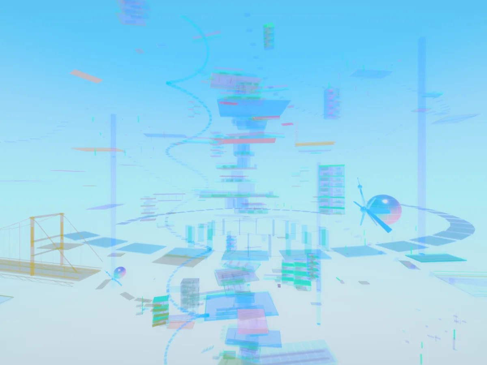

WISHLAND 위시랜드

| 位置 위치 | 少年們的心中 소년들 마음속 |
|---|---|
| 管理者 관리자 | NCT WISH |
| 開幕日 개장일 | 2026年 10月 12日 2026년 10월 12일 |
| 面積 면적 | 無限制 제한없음 |
| 網站 웹사이트 | http://www.wishwishwishwishwishland.com/ |
概要 개요
WISH LAND是少年們[1]的情感反應型世界，同時也是一座通訊型主題樂園。它同時存在於線上與線下，據說當少年們的夢想、願望與情感轉化為特定的訊號時，便會與外部世界暫時產生連結。
위시랜드(영어: WISH LAND)는 소년들[1]의 감정 반응형 세계이자 통신형 테마파크다. 온라인과 오프라인에 모두 존재하며, 소년들의 꿈과 소원, 감정이 특정한 신호로 변환될 때 외부 세계와 일시적으로 연결되는 것으로 알려져 있다.
歷史 역사
早期的 WISH LAND 是一個沒有色彩、寂靜無聲的空間。然而，某個原因不明的裂隙使外部能量流入其中，WISH LAND 也開始逐漸發生巨大的變化。
초기의 위시랜드는 무채색의 적막한 공간이었다. 그러나 원인을 알 수 없는 균열을 통해 외부의 에너지가 유입되면서 위시랜드에는 큰 변화가 일어나기 시작했다.
裂縫與能量 균열과 에너지
某天，WISH LAND 出現了一道原因不明的裂縫。透過裂縫，一股無法確定名稱與形態的能量湧入，而那個能隨心所欲變換外貌並主動搭話的陌生存在，讓少年們感到困惑[2]。然而，隨著相處時間的延長，這份困惑逐漸轉化為好奇、喜悅，乃至近乎悸動的情感；這起事件也被記錄為 WISH LAND 中少年們心跳加速幅度最大的一次。
此後，隨著裂縫逐漸癒合，能量也隨之消散，少年們體驗到了前所未有的空虛感。
어느 날, 위시랜드에 원인을 알 수 없는 균열이 발생했다. 균열을 통해 이름도 형태도 특정할 수 없는 에너지가 유입되었고, 자유자재로 모습을 바꾸며 말을 걸어오는 낯선 존재는 소년들을 혼란[2]스럽게 했다. 그러나 함께 시간을 보내면서 혼란은 점차 호기심과 즐거움, 설렘에 가까운 감정으로 바뀌었고, 이 사건은 위시랜드에서 소년들의 심박수가 가장 크게 상승한 최초의 사례로 기록되었다.
이후 균열이 서서히 아물면서 에너지도 함께 사라졌고, 소년들은 이전에는 느껴 보지 못한 공허함을 경험하게 되었다.
通訊連線 통신연결
察覺到少年們情緒的變化以及藏在心底的願望後，機械 WICHU[3]試圖建立通訊連結，以便向封閉的裂縫彼端傳送訊號。通訊連結是連接 WISH LAND 與外部世界通訊媒介的技術，其特點在於與偶然產生的裂縫不同，能夠朝向特定的對象傳送訊號。
自首次建立通訊連結後曾一度消失的能量，如今以聊天訊息的形式再度被觀測到。隨著通訊連結的啟動，各式各樣的能量重新流入 WISH LAND ，而與這些能量相連的少年們的心跳也開始急速上升。少年們終於意識到自己所感受到的情感原來就是「愛」[4]，而 WISH LAND 也轉變為少年們與能量彼此傳遞心意的空間。
소년들의 달라진 감정과 마음속에 숨겨진 소원을 감지한 메카 위츄[3]는 닫힌 균열 너머로 신호를 보내기 위해 통신 연결을 시도했다. 통신 연결은 위시랜드와 외부의 통신 매체를 잇는 기술로, 우연히 발생한 균열과 달리 특정한 상대를 향해 신호를 전송할 수 있다는 특징이 있다.
최초의 통신 연결 이후 사라졌던 에너지는 채팅 메시지의 형태로 다시 관측되었다. 통신 연결이 활성화되면서 다양한 형태의 에너지가 위시랜드로 다시 유입되었고, 이들과 연결된 소년들의 심박수도 빠르게 상승하기 시작했다. 소년들은 비로소 자신들이 느낀 감정이 사랑[4]임을 깨닫게 되었고, 위시랜드는 소년들과 에너지가 서로의 마음을 주고받는 공간으로 변화했다.
異常現象 이상 현상
9月29日，一則來自 WISH LAND 的特殊訊息首度傳達至外部世界。WISH LAND 原本使用所有人都能理解的共通語言進行溝通，但由於 WISH LAND 與外部世界之間的通訊錯誤，因此被解讀為文字出現裂痕的現象。
9월 29일, 외부 세계에 처음으로 위시랜드에서 보낸 특이한 메세지가 도달했다. 위시랜드는 모두가 이해할 수 있는 공용어로 소통되나, 위시랜드와 외부 세계 간의 통신 오류로 인해 글자에 균열이 발생한 현상으로 해석되었다.
升級 업그레이드
少年們試圖將那些讓他們認識「愛」的能量，邀請至屬於少年們的世界—— WISH LAND 。經過多方努力，試圖透過各種方式將 WISH LAND 與外部世界連結，最終少年們與能量的心意相通，長期以來維持著屬於自己的世界的 WISH LAND 也因此得以重建。原本只屬於少年們的 WISH LAND ，在與外部世界建立連結後，升級為一座 Station（基地）。
隨著世界的重建而覺醒的少年們，如今不再只是待在 WISH LAND 裡等待，而是能夠親自走向外部世界，去與能量相遇。
소년들은 자신들에게 사랑을 알게 해 준 에너지들을 소년들의 세계, 위시랜드로 초대하려고 했다. 다양한 방법을 통해 위시랜드와 외부 세계를 연결하려 노력한 끝에, 소년들과 에너지의 마음이 통하게 되었고 오랫동안 자신만의 세계를 유지했던 위시랜드는 재구축 된다. 소년들의 세계였던 위시랜드는 외부 세계와 연결할 수 있게 되면서 스테이션으로 업그레이드된다. 세계의 재구축과 함께 각성한 소년들은 이제 위시랜드에서 기다리는 것 뿐만이 아니라 본인들이 직접 에너지를 만나기 위해 외부 세계로 나아갈 수 있게 되었다.
WISH LAND 管理員 위시랜드 관리자
SION 시온
網站總負責人：負責伺服器穩定性維護、病毒管理、畫面模式切換、常見問題解答（FAQ）等整體營運工作。雖然看起來總能沉著且嫻熟地解決所有問題，但其實是個會將詢問內容逐一親手寫在紙上，並仔細斟酌如何回覆的感性男孩。據說還時常發生這樣的溫馨案例：不回覆諮詢內容，反而傳送自拍。
홈페이지 총괄 담당: 서버 안정화와 바이러스 관리, 화면모드 전환, FAQ 등 전반적인 운영을 담당하고 있다. 침착하고 능숙하게 모든 문제를 해결할 것 처럼 보이지만, 문의 내용을 종이에 하나씩 손으로 적어가며 답변을 고민하는 감성 보이. 종종 문의 내용에 대한 답변 대신 셀카를 보내는 아름다운 사례도 보고되고 있다.
RIKU 리쿠
今日運勢頁面負責人：為大家解讀今日戀愛運勢的甜心男孩。他自己也會細心關注各種戀愛運勢。雖然會告訴大家與戀愛相關的各種運勢、幸運時間及幸運物品等資訊，但總覺得有些奇怪，關於戀愛的所有答案似乎都指向了 RIKU。是我的錯覺嗎……？不過最近他開始強調，歸根結底，最重要的還是付諸行動。
오늘의 운세 페이지 담당: 오늘의 사랑 운세를 봐주는 스윗 보이. 본인도 온갖 연애운을 챙겨본다. 사랑과 관련된 각종 운세와 행운의 시간, 아이템 등을 알려주지만, 뭔가 이상하게 사랑에 대한 모든 답이 리쿠를 가리키는 것만 같다. 기분 탓인가…? 하지만 최근 들어 결국 중요한 건 행동하는 것임을 강조한다.
YUSHI 유우시
I SPY 頁面負責人：會仔細觀察其他頁面負責人、並在周圍探頭探腦的害羞男孩。雖然想表達心意，但一到要親口說明時便會猶豫不決，於是會偷來（？）能表達情感的物品，將它們一個一個整齊收集起來；當有訪客造訪頁面時，便會透過圖示來傳達自己的心意。
I SPY 페이지 담당: 다른 페이지 담당자들을 유심히 관찰하며 주변을 기웃거리는 샤이 보이. 마음을 표현하고 싶지만 정작 말로 설명하려고 하면 망설여져, 감정을 표현할 수 있는 아이템들을 훔쳐와(?) 차곡차곡 모아두고 페이지 접속자가 나타나면 아이콘으로 자신의 마음을 표현한다.
JAEHEE 재희
網站 Romance 負責人：會細心觀察訪客的心情與喜好，並為其挑選最合心意的 BGM ，是個 浪漫男孩。最近流傳著一種說法，他不再親自唱歌，而是將愛意裝滿後車廂，親自找上門展開告白攻勢(^.^…)。
홈페이지 로맨스 담당: 접속자의 기분과 취향을 세심하게 체크하며 마음에 꼭 맞는 BGM을 고르는 로맨틱 보이. 최근엔 직접 노래하는 대신, 트렁크 가득 사랑을 싣고 찾아가 고백 공격(^.^…)을 펼친다는 설이 돌고 있다.
RYO 료
網站吉祥物負責人：總是面帶燦爛笑容，熱情迎接訪客的可愛男孩。可愛到讓人忍不住想把他放進口袋裡隨身攜帶，但不知從哪天開始，他總是板著臉專注地冥想。我們家的狗狗到底發生什麼事了呢？只要他發現自己似乎因為盯著什麼東西看得太入神而可能被發現，就會突然慌張地把東西藏起來。是戀愛頻道的影片嗎……？
홈페이지 마스코트 담당: 언제나 밝게 웃으며 접속자를 반갑게 맞이하는 큐트 보이. 주머니에 넣고 다니고 싶을 만큼 극강의 귀여움을 자랑하지만, 어느 날부터인가 진지한 표정으로 명상만 하고 있다. 우리 강아지한테 무슨 일이 일어난 거지? 그러다가도 뭔가를 골똘히 보다 들킬라치면 화들짝 감추곤 한다. 연애주파수 영상…?
SAKUYA 사쿠야
迷你遊戲負責人：管理遊戲？那種事我才不做。我只是自己在玩遊戲而已。無論是既定的規則還是眼前的障礙，全都直接推開，朝著目標狂飆而去的狂野男孩。他隨身攜帶愛用的專屬推土機，心情好的時候還會載上成員們。雖然偶爾會衝出遊戲畫面，把官網搞得亂七八糟，但他本人卻認為這也是遊戲管理的一部分。
미니게임 담당: 게임 관리? 그런 건 안 한다. 내가 게임을 할 뿐. 정해진 규칙도 눈앞의 장애물도 전부 밀어버리며 목표를 향해 돌진하는 와일드 보이. 애용하는 전용 불도저를 소지하고 있고, 내키면 멤버들을 태워줄 때도 있다. 가끔 게임창 밖으로 튀어나와 홈페이지를 엉망으로 만들지만, 본인은 이것도 게임 관리의 일부라는 입장이다.
門票及評價 입장요금 및 평가
WISH LAND 的入場費是免費的。少年們與能量之間所產生的不可預測的互動，會影響 WISH LAND 的各項元素。 WISH LAND 具有會隨著少年們的心情與頻率而變化的特性，因此被評價為一種充滿有機美感的存在。
위시랜드의 입장료는 무료다. 소년들과 에너지 사이에서 벌어지는 예측 불가능한 상호작용은 위시랜드의 여러 요소에 영향을 끼친다. 위시랜드는 소년들의 마음과 주파수에 따라 변형되는 특징을 갖고 있어 그 유기성으로 아름답다는 평가를 받는다.
交通指引 찾아가는 길
WISH LAND 存在於線上與線下的界線之外。當少年們的夢想、願望與情感暫時與外界連結時，無論是誰，只要在原地各就各位，聽見「預備，起！」，就 GO GO！
위시랜드는 온라인과 오프라인의 경계를 넘어 존재한다. 소년들의 꿈과 소원, 감정이 외부 세계와 일시적으로 연결될 때 누구라도 제자리에 준비, 땅! 하면 GO GO! 하면 된다.
注意事項 주의할 점
如前所述，WISH LAND 是一個少年們的情感反應型世界，由於它深受少年們的心情與頻率所左右，因此當少年們產生煩惱或內心混亂時，各處便會出現系統錯誤，導致美化管理工作急遽變得困難。此外，驅動 WISH LAND 運作的 Wi-Fi 電力偶爾會出現連線不穩定的弱點，一旦電力開始下降，就必須在系統完全關機之前務必輸入密碼。
위에서 언급했듯 위시랜드는 소년들의 감정 반응형 세계로, 이들의 마음과 주파수에 영향을 크게 받기 때문에 소년들이 고민이 생기거나 마음이 혼란해지면 곳곳에 버그들이 생기면서 미화 관리가 급격하게 어려워진다. 또한, 위시랜드를 가동케 하는 와이파이 전력은 때때로 다소 연결이 불안정해지는 취약점을 갖고 있어 파워가 떨어지기 시작하면 아예 셧다운되기 전에 비밀번호를 꼭 입력해 주어야 한다.